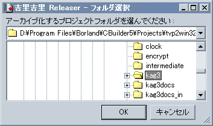

When you run Releaser (krkrrel.exe in the tools folder), you will first be asked to specify a folder. Specify a folder.
Targets files in the folder specified here.
Note
Releaser has a feature that when files with exactly the same contents are found in the process of creating the final archive, they are combined into one even if the file name is different, and only one file's capacity is used .
Note
Releaser automatically ignores the CVS meta-information directory (the directory named "CVS", which contains a file named "Repository"). It also ignores files and directories whose names begin with a . (dot), such as hidden UNIX-like files and the Subversion meta-information directory.
Note
When Releaser creates an archive, it creates a file called
default.rpf in the directory where the archive was created. It describes the options for creating an archive, so you can easily create the next time you create an archive with the same settings.